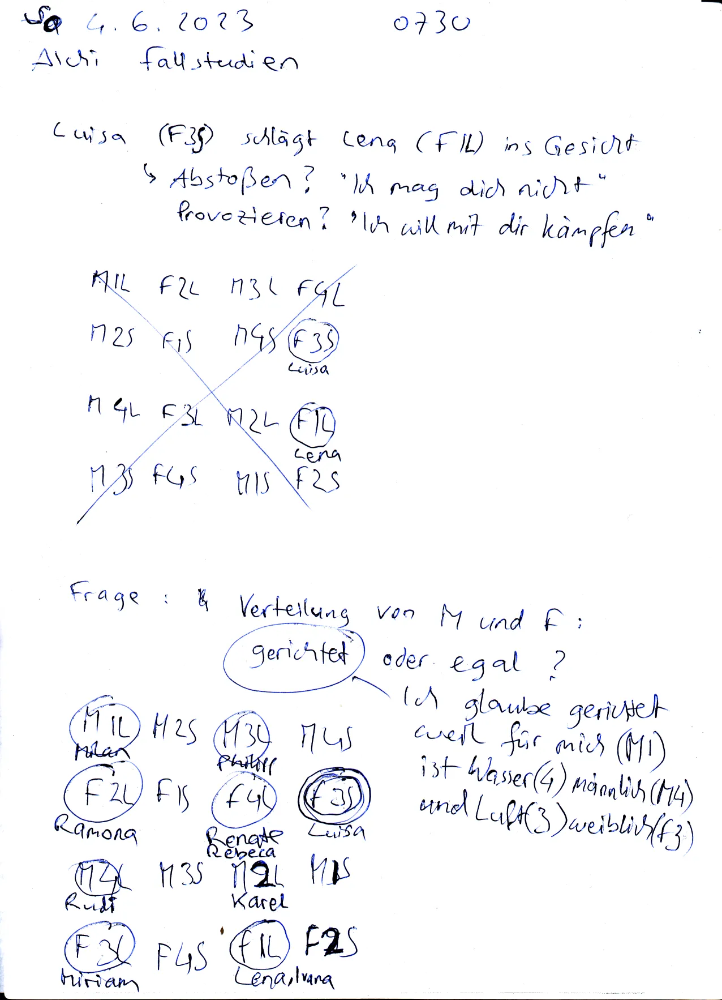

2023-06
2023-06-04.07-30.fallstudie-luisa-vs-lena.webp

2023-06-20.07-00.nostr-fundamental-flaws.webp

2023-06-23.07-01.konservativ-vs-liberal.prioritäten.webp

2023-06-25.00-00.approach.strukturiert-oder-chaotisch.denken-oder-machen.dialog.beide-haben-recht.monotones-soziales-umfeld.webp

2023-06-25.00-00.jeden-tag-das-gleiche.keine-panik.blaue-pillen.schöne-lügen.webp

2023-06-25.00-01.monotonie-macht-dumm.pazifismus.soldaten-gegen-söldner.webp

2023-06-25.00-01.nostr-critique.webp